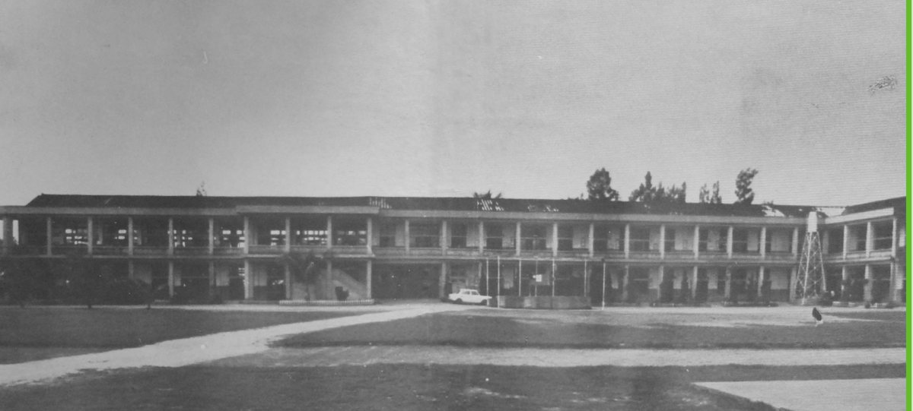

Behind sixty years of Nan Jung stands a woman whose own life had already crossed an ocean and survived one of history's darkest hours. Her name was Kuo Ming-hua — the founder's wife, and the quiet strength that held the school together.
A survivor of Nagasaki
As a young woman, Kuo Ming-hua went to Japan for her high-school years. There, in August 1945, she lived through the atomic bombing of Nagasaki. In the ruins that followed, she stayed to help the wounded and to care for her own classmates. For this the Japanese government later honoured her, granting her the Atomic Bomb Survivor's Handbook — and with it, lifelong medical care and a living allowance. It was a bond with Japan written not in any treaty, but in compassion under the hardest of circumstances.

The shopkeeper who built a school
After graduating, she returned to Taiwan and married Chen Yao-huo. She began with a small shop, which she grew into a formalwear and beauty business — a strikingly modern enterprise for its day. Nearly every dollar she earned went into the school, so that her husband could teach without worry. By the time the founder passed away, the family had poured an estimated forty to fifty million New Taiwan dollars into Nan Jung — not counting interest. When her own father died, she gave the school the entire inheritance left to her (around six million dollars in 1991), keeping nothing back.
Her quiet strength
She cared for the founder in every way — his health, his daily life, his medicines, his hospital visits — and as an elder of her church and a natural helper of others, she drew many friends to his side in support. When their daughter Chen Chun-shih was asked why her mother gave so much, without a word of complaint, her answer was simple:
"Because of the love of Christ, her sense of responsibility to the family, her support for her husband — and because she had always loved public service, and education most of all."「キリストの愛、家族への責任感、夫への支え——そして母はもともと公益を愛し、なかでも教育を心から大切にしていたからです。」
Remembered across the sea
Her story was not forgotten in the country where it began. In 2011, a reporter from Japan's Asahi Shimbun, Edamatsu Yuki, travelled all the way to Taiwan to interview her about how, as a girl, she had helped rescue the victims of the atomic bomb. Honoured as a model mother, remembered in Japan and in Taiwan alike, Kuo Ming-hua remains what the school's own history calls her: the founder's greatest pillar — and one of the deepest roots of Nan Jung's long friendship with Japan.
← Back to Our Story六十年の南榮の歩みの背後に、一人の女性がいました。彼女自身の人生は、すでに海を渡り、歴史のもっとも暗い時を生き抜いていたのです。その名は郭明華——創立者の妻であり、学校を静かに支えつづけた力でした。
長崎を生き抜いて
若き日、郭明華は高校時代を日本で過ごしました。そして1945年8月、長崎で原爆に遭います。その惨禍のなかで、彼女はとどまって負傷者を助け、同級生を介抱しました。のちに日本政府はその行いを表彰し、「被爆者手帳」を授与——終生の医療と生活手当が認められました。それは協定に記された絆ではなく、極限の状況のなかで示された慈しみによって結ばれた、日本との絆でした。
学校を築いた、店の女主人
卒業後、彼女は台湾に戻り、陳耀火と結婚します。小さな店から始め、やがて礼服と美容の事業へと育てました——当時としては、際立って先進的な仕事でした。稼いだお金のほとんどは学校へ。夫が憂いなく教育に専念できるように、と。創立者が世を去るまでに、一家が南榮に注いだ額は、利息を除いて推定四千万〜五千万台湾ドル。実父が亡くなったときには、自らに遺された遺産のすべて（1991年、約六百万ドル）を、何も残さず学校に捧げました。
静かな、強さ
彼女は創立者をあらゆる面で支えました——健康を気づかい、暮らしを整え、薬を用意し、通院に付き添って。教会の長老として、また生来の世話好きとして、多くの友を夫のもとへ引き寄せ、支えとしました。なぜ母はひと言の不平もなく、これほど尽くせたのか——娘の陳純適がそう問われたとき、答えは、ごく素朴なものでした。
「キリストの愛、家族への責任感、夫への支え——そして母はもともと公益を愛し、なかでも教育を心から大切にしていたからです。」— 執行長 陳純適
海を越えて、記憶される
彼女の物語は、その始まりの地・日本でも忘れられてはいませんでした。2011年、朝日新聞の記者・枝松佑樹氏が、はるばる台湾を訪れ、少女だった彼女が原爆の被災者の救助にどう加わったかを取材しました。模範母親として讃えられ、日本でも台湾でも記憶される郭明華。学校の歴史が彼女をこう呼ぶとおりに——創立者の最大の支柱、そして南榮と日本の長い友情の、もっとも深い根のひとつとして。
← 学校の歩みへ戻る